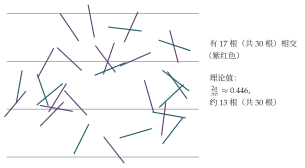

STEP I 1993，第 16 题
继续之前，请先阅读题目（原题为英文）。题目载于 STEP Support Programme 的题目资料库： step.maths.org/questions/93-s1-q16
引子
把一根针抛到铺有平行地板条的地板上。针横跨板缝的机会竟然与 \(\pi\) 有关，尽管眼前根本没有任何圆形。抛很多次并数一数横跨板缝的次数，就可以用实验来估算 \(\pi\)。这就是布丰投针问题（Buffon’s needle），由布丰伯爵乔治-路易·勒克莱尔（Georges-Louis Leclerc, Comte de Buffon）于 1733 年提出，并于 1777 年由他本人解决：它是几何概率（geometric probability）的第一个问题，也是所有蒙地卡罗方法（Monte Carlo method）的始祖。
这个 \(\pi\) 来自角度：针的方向在半圈之内均匀分布（uniform），把针横跨平行线方向的“影子”长度对所有方向取平均，便得出因子 \(\frac2\pi\)。本题则以 \(\cos^{-1}\) 的积分来完成这个计算。
动笔之前
针的中心与最近一条直线的距离为 \(x\)，而针与这些直线的垂直线所成的角为 \(y\)。针朝着该直线能伸展多远？
针的每一半长度为 \(a\)，它在垂直于直线方向上的分量是 \(a\cos y\)。因此，针与最近的直线相交，当且仅当 \(a\cos y \geq x\)。（由于 \(a < b\)，针不可能触及其他直线。）
逐步解题
阶段 1 积分
设 \(t = \cos y\)，当 \(t\) 由 \(0\) 变到 \(1\) 时，\(y = \cos^{-1}t\) 由 \(\frac\pi2\) 变到 \(0\)，而 \(\mathrm{d}t = -\sin y\,\mathrm{d}y\)。所以 \[\int_0^1\cos^{-1}t\,\mathrm{d}t = \int_0^{\pi/2}y\sin y\,\mathrm{d}y = \bigl[-y\cos y\bigr]_0^{\pi/2} + \int_0^{\pi/2}\cos y\,\mathrm{d}y = 0 + 1 = 1. \qed\] （或者：这个积分是 \(\cos^{-1}\) 的图像与两条坐标轴之间的面积，它等于 \(y = \cos x\) 由 \(0\) 到 \(\frac\pi2\) 的曲线下面积，两者只是沿 \(y = x\) 反射而已。）
阶段 2 给定位置
对于固定的 \(x\)，哪些角度 \(y\) 会使针与直线相交？这些角度的概率是多少？
若 \(x \geq a\)，针无法触及直线。若 \(x < a\)，相交的条件是 \(\cos y \geq \frac xa\)，即 \(y \leq \cos^{-1}\frac xa\)。由于 \(Y\) 在 \([0, \frac\pi2]\) 上均匀分布， \[\mathrm{P}(\text{相交} \mid X = x) = \frac{2}{\pi}\cos^{-1}\frac xa \qquad (0 \leq x < a). \qed\]
阶段 3 对位置取平均
\(X\) 在 \([0, b]\) 上均匀分布，其密度（density）为 \(\frac1b\)，所以 \[\mathrm{P}(\text{相交}) = \frac1b\int_0^a\frac2\pi\cos^{-1}\frac xa\,\mathrm{d}x = \frac{2a}{\pi b}\int_0^1\cos^{-1}t\,\mathrm{d}t = \frac{2a}{\pi b}, \qed\] 其中用了代换 \(x = at\)。
若针的长度恰好等于半间距（\(a = \frac{b}{2}\)，即针的长度 \(2a\) 等于 \(b\)），相交的概率是 \(\frac1\pi\)。要把 \(\pi\) 估算至小数点后两位，你需要抛多少次？

回顾
两个独立的坐标。针的位置和角度互相独立（independent）且均匀分布，所以所求概率是一个二重积分（double integral），可以逐个变量计算。
先取条件，再求平均。先固定 \(x\)，对角度取平均；然后再对 \(x\) 取平均。
代换显露出常数。以 \(x = at\) 作缩放，答案便化约为单一个通用的积分。
背后的数学
布丰的面条
以下的方法几乎不用计算就能看出答案。把针屈曲成任意形状，成为一根“面条”，并设 \(C\) 为它与直线相交的次数。根据期望值的线性（linearity of expectation），一条曲线相交次数的期望值，等于它各小段的期望值之和，所以与长度成正比：\(\mathrm{E}(C) = \kappa L\)，其中 \(\kappa\) 是某个常数。要求出 \(\kappa\)，可取面条为一个直径等于直线间距 \(2b\) 的圆：它总是恰好相交两次，而其长度为 \(2\pi b\)。所以 \(\kappa \cdot 2\pi b = 2\)，得出 \(\kappa = \frac{1}{\pi b}\)。对于长度为 \(2a < 2b\) 的直针，它最多相交一次，故 \(\mathrm{P}(\text{相交}) = \mathrm{E}(C) = \frac{2a}{\pi b}\)。这个论证出自 Joseph-Émile Barbier（1860 年），是概率推理中的瑰宝：那个 \(\pi\) 来自用来校准常数的圆。
估算 \(\pi\)，以及错误示范
若抛出 \(n\) 根针，其中 \(c\) 根相交，则 \(\frac cn \approx \frac{2a}{\pi b}\)，而 \(\pi \approx \frac{2an}{bc}\)。误差只会按 \(\frac{1}{\sqrt n}\) 的速度缩小，所以要把 \(\pi\) 算至小数点后三位，大约需要抛一百万次。1901 年，意大利数学家 Mario Lazzarini 声称抛了 \(3408\) 次便得出 \(\pi \approx \frac{355}{113} = 3.1415929\ldots\)（准确至小数点后六位）。统计学家指出，这个结果好得令人难以置信：抛 \(3408\) 次，再配合一根精心挑选的针，恰好 \(1808\) 次相交便会得出 \(\frac{355}{113}\)，而只要在适当的时刻停止实验，就能制造出这个结果。这是关于选择性报告的经典警世故事。
布丰是一位博物学家，曾任巴黎皇家植物园园长，并著有一套 \(36\) 卷的自然史。他于 1733 年向法国科学院（Académie des Sciences）提出投针问题（以及一个使用方形地砖的版本，即“franc-carreau”游戏），并于 1777 年发表解答。他的目的是要说明，概率中不单可以运用算术，也可以运用几何。积分几何（integral geometry）——研究随机直线及其与曲线和曲面的交点的理论——正是由此发展而来，如今应用于体视学（stereology），即从二维切片估算三维结构（例如组织中的细胞）的大小和形状的科学。
思维技巧
当结果取决于数个独立的连续随机变量时，一个事件的概率就是联合密度（joint density）在该事件发生的区域上的积分。
在大学里，这成为连续概率的基础：联合密度、边际分布（marginal distribution）和变量代换（change of variable），这些全都会在 第 12.21 节 和 第 12.22 节 再次出现。
延伸练习
长针。若 \(a > b\)，针可能与多于一条直线相交。证明相交次数的期望值仍然是 \(\frac{2a}{\pi b}\)。
面条。把一根长度为 \(2a\) 的针屈成直角（两臂各长 \(a\)）。相交次数的期望值是多少？
方形地砖。把一枚半径为 \(r\) 的硬币抛到铺有边长为 \(s > 2r\) 的方形地砖的地板上。求硬币完全落在一块地砖之内的概率。
Lazzarini 的针。设 \(a = \frac56b\)（使得 \(\frac{2a}{\pi b} = \frac{5}{3\pi}\)），证明抛 \(3408\) 次而有 \(1808\) 次相交，会给出估算值 \(\pi \approx \frac{355}{113}\)。
延伸阅读
Daniel Klain & Gian-Carlo Rota, Introduction to Geometric Probability（Cambridge University Press），此书由布丰投针问题讲起。
Lee Badger, “Lazzarini’s lucky approximation of \(\pi\)”，Mathematics Magazine 67 (1994)。一个可疑实验背后的统计学。
Paul Nahin, Digital Dice（Princeton University Press）。以蒙地卡罗方法处理概率问题。